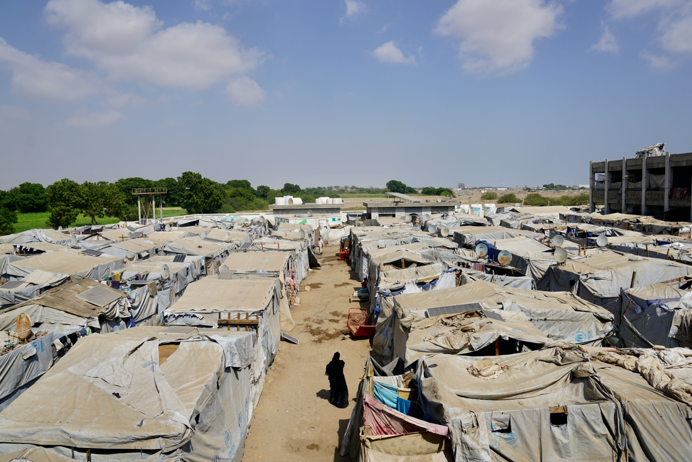
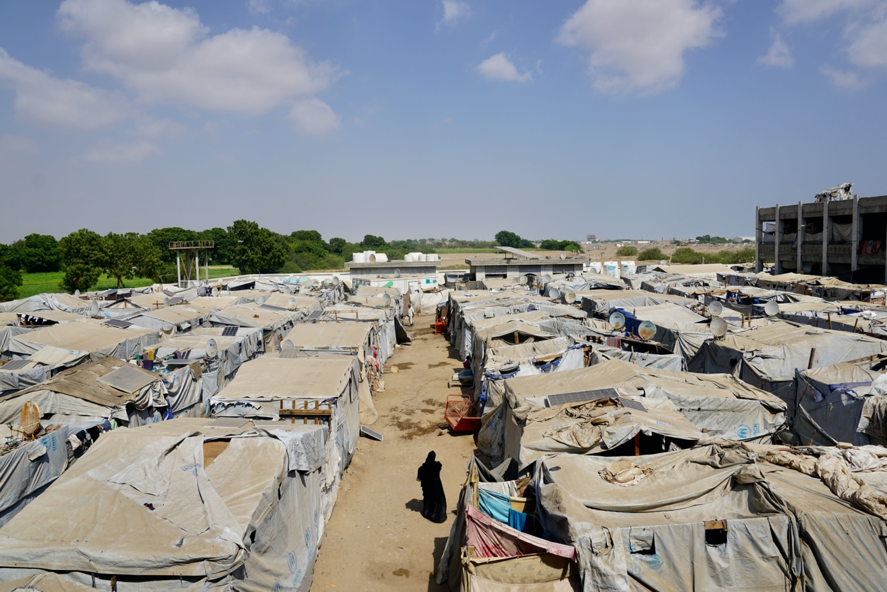

Fighting in Al Hudaydah City
In November 2017, fighting reached the neighbourhood in the Al Hali District where Musa lived with his wife, Fariha, and their three children. Several residents were killed and others were severely injured by stray bullets and indiscriminate shelling. Soon, the area became deserted. Musa and his family decided to leave too.
They fled using a neighbour’s donkey cart, leaving most of their belongings behind, and went to stay with relatives in a nearby neighbourhood. Three days later, as shelling drew closer, the family left Al Hudaydah for Bayt Al Faqih where Musa’s father once lived.
Bayt Al Faqih
In Bayt Al Faqih, the family knew no one and slept outside next to a mosque for three days. They lived on water and bread donated by a local bakery.
With fighting again nearby, Musa and Fariha decided to head for Aden, but armed men at a checkpoint refused to let them pass. Since they could not follow the main coastal road to Aden, they decided to go through the mountains to Ta’izz City. Musa borrowed 8,000 Yemeni rials (around US$20) to pay a bus driver to take them, driving through rugged terrain to avoid detection.
Ta'izz City
While in Ta’izz City, Musa learned from former neighbours that his house in Al Hudaydah had been looted and all the family’s belongings stolen. He had lost everything except his family in less than two weeks.
A few days later, people advised Musa to go to a displacement site at a school in Dar Sad in Aden Governorate where they could get help from aid agencies. Other displaced people who had managed to pool enough money to pay a bus driver to take them to Aden, agreed to let the family travel with them on the 130 kilometer ride.
Arrival in Dar Sad, Aden
When the family finally reached the school in Dar Sad where the displacement site was located, they found that all classrooms were occupied. They had no choice but to initially sleep in the schoolyard.
Aid agencies soon provided a tent, food rations, water and cash assistance. Musa occasionally earns money working as a labourer but the family depends on humanitarian assistance. With the conflict unresolved, they have had to remain living in the camp for the past three years.

 
